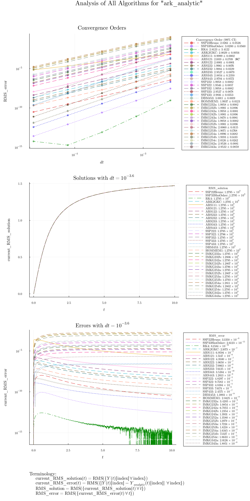
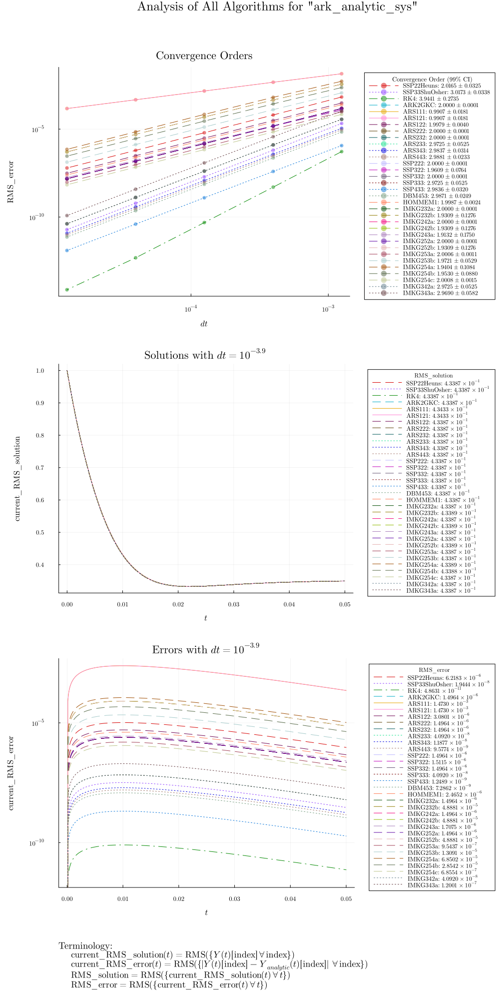
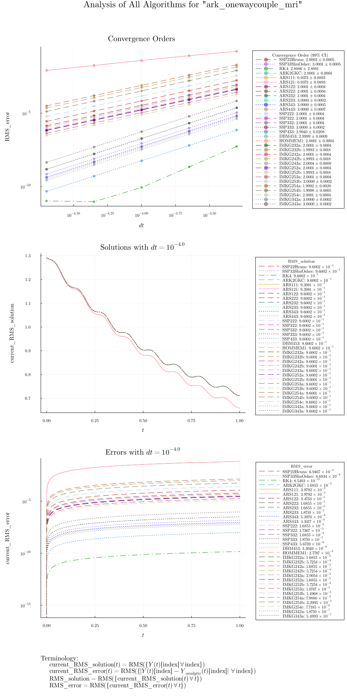
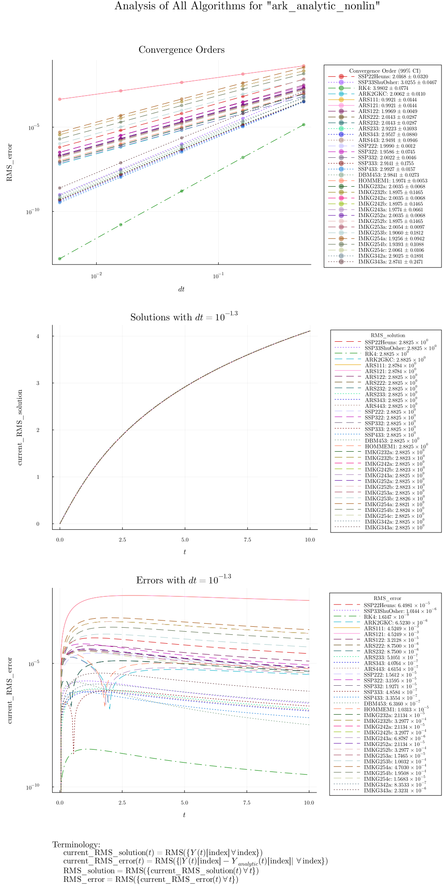
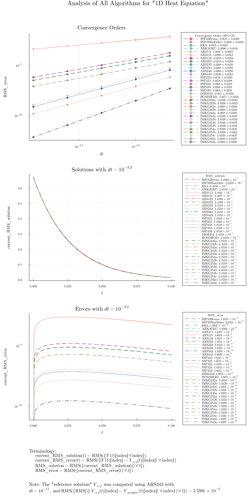
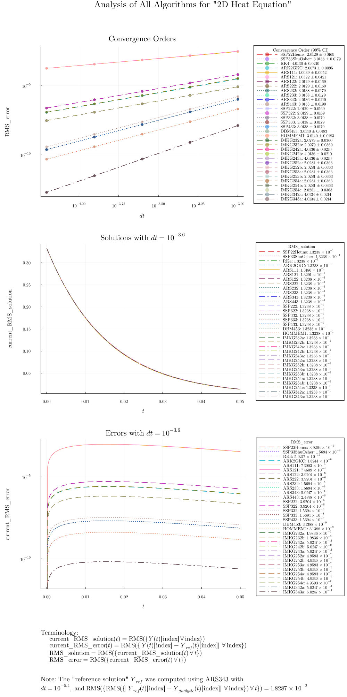
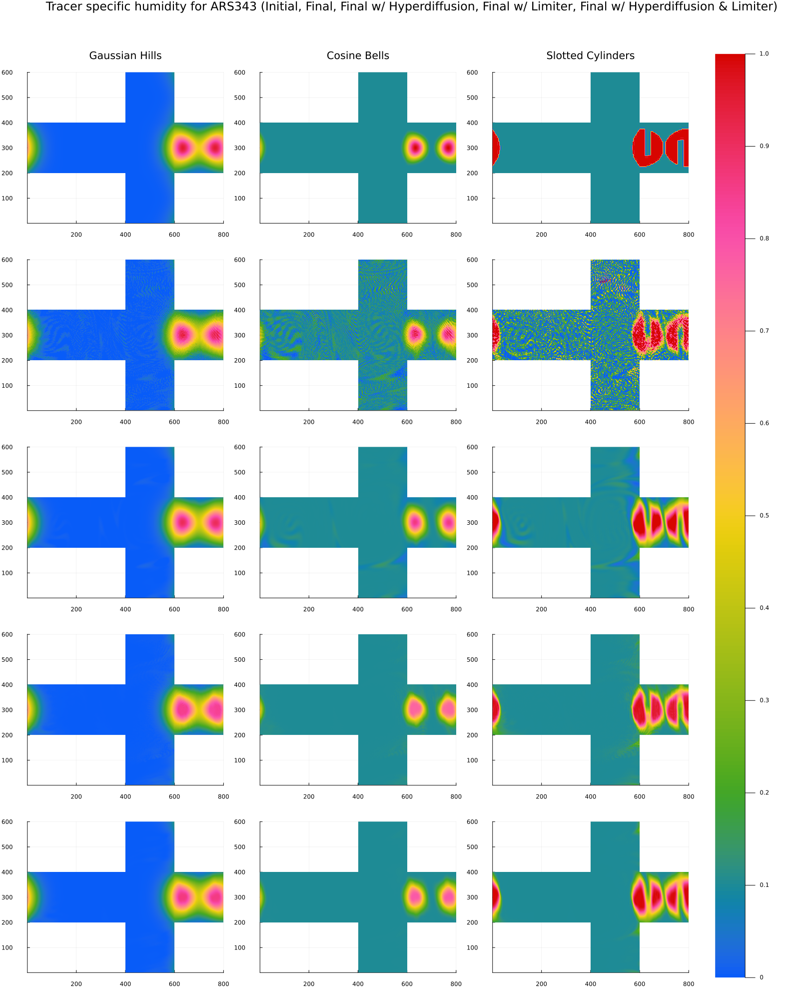

Verifying Correctness
The IMEXAlgorithm supports problems that specify any combination of the following: an implicit tendency T_imp!, an explicit tendency T_exp!, a limited tendency T_lim!, a function dss! that applies a direct stiffness summation, and a function lim! that applies a monotonicity-preserving limiter.
Convergence without a Limiter
In order to verify the correctness of our algorithms without a limiter, we compute their convergence orders for a variety of test cases. For each case, we estimate the convergence order of the algorithm over a range of stable timesteps, ensuring that the estimate computed_order ± order_uncertainty satisfies |computed_order - predicted_order| ≤ order_uncertainty and order_uncertainty ≤ predicted_order / 10. We also generate a plot that shows each algorithm's convergence as the timestep is reduced, along with plots that show the norms of each algorithm's solution and error over time (for some stable timestep). In addition, we verify that SSP algorithms produce the same results (up to floating-point roundoff error) when run in Unconstrained mode (at least, when run without a limiter).
By Godunov's theorem, the use of a monotonicity-preserving limiter reduces the convergence order of any algorithm to 1, so we do not include any test cases that use T_lim! and lim!.
The test cases we use for this analysis are: - ark_analytic, which uses a nonlinear T_exp! and a linear T_imp! - ark_analytic_sys and ark_onewaycouple_mri, which use a linear T_imp! - ark_analytic_nonlin, which uses a nonlinear T_imp! - 1d_heat_equation and 2d_heat_equation, which use a nonlinear T_exp! and dss!, where the spatial discretization is implemented using ClimaCore
include("report_gen.jl")┌ Warning: Order uncertainty too large for RK4 (ark_analytic)
└ @ Main ~/work/ClimaTimeSteppers.jl/ClimaTimeSteppers.jl/docs/build/plotting_utils.jl:217
┌ Warning: Order uncertainty too large for RK4 (ark_onewaycouple_mri)
└ @ Main ~/work/ClimaTimeSteppers.jl/ClimaTimeSteppers.jl/docs/build/plotting_utils.jl:217     
Errors with a Limiter
In order to verify the correctness of our algorithms with a limiter, we recreate Table 1 from "Optimization-based limiters for the spectral element method" by Guba et al. This involves running the horizontal_deformational_flow test case (from "A standard test case suite for two-dimensional linear transport on the sphere" by Lauritzen et al.) with and without a limiter, and also with and without hyperdiffusion. This test case uses a limited tendency T_lim! (which consists of advection and, optionally, hyperdiffusion), along with dss! and lim!. The spatial discretization is implemented using ClimaCore. Since this analysis is relatively expensive to run, we only check the results for SSP333 and ARS343. Note that it is possible to limit undershoots and overshoots to 0 (up to floating-point roundoff error) when using the SSP SSP333, but not when using the Unconstrained ARS343.
# This also runs with num_steps = 1000, but with larger under/overshoots; 4800
# is the value used in the paper.
limiter_summary(Float64, [SSP333(), ARS343()], horizontal_deformational_flow_test, 4800)GKS: Rectangle definition is invalid in routine SET_VIEWPORT
GKS: Rectangle definition is invalid in routine SET_VIEWPORT
┌───────────┬─────────┬────────────────┬───────────────────┬────────────────┬───────────────┬──────────────┬──────────────┬──────────────┐
│ Algorithm │ Limiter │ Hyperdiffusion │ Tracer Name │ Max Undershoot │ Max Overshoot │ 1-Norm Error │ 2-Norm Error │ ∞-Norm Error │
├───────────┼─────────┼────────────────┼───────────────────┼────────────────┼───────────────┼──────────────┼──────────────┼──────────────┤
│ SSP333 │ false │ false │ Gaussian Hills │ 2.5173e-01 │ 3.4281e-02 │ 1.6313e-01 │ 9.7109e-02 │ 4.1052e-01 │
│ SSP333 │ false │ false │ Cosine Bells │ 6.3452e-01 │ 5.3262e-02 │ 2.7035e-01 │ 2.7119e-01 │ 8.9240e-01 │
│ SSP333 │ false │ false │ Slotted Cylinders │ 1.1137e+01 │ 3.3678e+00 │ 8.0731e-01 │ 6.9494e-01 │ 1.0024e+01 │
├───────────┼─────────┼────────────────┼───────────────────┼────────────────┼───────────────┼──────────────┼──────────────┼──────────────┤
│ SSP333 │ false │ true │ Gaussian Hills │ 2.2338e-02 │ 0.0000e+00 │ 4.6164e-02 │ 4.1011e-02 │ 5.3688e-02 │
│ SSP333 │ false │ true │ Cosine Bells │ 7.1319e-02 │ 0.0000e+00 │ 6.8494e-02 │ 1.2382e-01 │ 1.5159e-01 │
│ SSP333 │ false │ true │ Slotted Cylinders │ 9.8359e-02 │ 1.5970e-01 │ 2.3591e-01 │ 3.3006e-01 │ 8.9983e-01 │
├───────────┼─────────┼────────────────┼───────────────────┼────────────────┼───────────────┼──────────────┼──────────────┼──────────────┤
│ SSP333 │ true │ false │ Gaussian Hills │ 0.0000e+00 │ 0.0000e+00 │ 4.5663e-02 │ 5.2441e-02 │ 1.2709e-01 │
│ SSP333 │ true │ false │ Cosine Bells │ 1.5281e-13 │ 0.0000e+00 │ 4.6850e-02 │ 1.2601e-01 │ 2.4857e-01 │
│ SSP333 │ true │ false │ Slotted Cylinders │ 1.5321e-13 │ 0.0000e+00 │ 2.0560e-01 │ 3.2336e-01 │ 8.8715e-01 │
├───────────┼─────────┼────────────────┼───────────────────┼────────────────┼───────────────┼──────────────┼──────────────┼──────────────┤
│ SSP333 │ true │ true │ Gaussian Hills │ 0.0000e+00 │ 0.0000e+00 │ 4.5253e-02 │ 4.9512e-02 │ 1.0247e-01 │
│ SSP333 │ true │ true │ Cosine Bells │ 1.5796e-13 │ 0.0000e+00 │ 5.1223e-02 │ 1.3108e-01 │ 2.2218e-01 │
│ SSP333 │ true │ true │ Slotted Cylinders │ 1.5815e-13 │ 0.0000e+00 │ 2.1719e-01 │ 3.4331e-01 │ 8.7972e-01 │
├───────────┼─────────┼────────────────┼───────────────────┼────────────────┼───────────────┼──────────────┼──────────────┼──────────────┤
│ ARS343 │ false │ false │ Gaussian Hills │ 2.5219e-01 │ 3.4480e-02 │ 1.6355e-01 │ 9.7329e-02 │ 4.1057e-01 │
│ ARS343 │ false │ false │ Cosine Bells │ 6.3598e-01 │ 5.3785e-02 │ 2.7102e-01 │ 2.7177e-01 │ 8.9245e-01 │
│ ARS343 │ false │ false │ Slotted Cylinders │ 1.1138e+01 │ 3.3753e+00 │ 8.1574e-01 │ 7.0007e-01 │ 1.0025e+01 │
├───────────┼─────────┼────────────────┼───────────────────┼────────────────┼───────────────┼──────────────┼──────────────┼──────────────┤
│ ARS343 │ false │ true │ Gaussian Hills │ 2.2337e-02 │ 0.0000e+00 │ 4.6155e-02 │ 4.1002e-02 │ 5.3668e-02 │
│ ARS343 │ false │ true │ Cosine Bells │ 7.1320e-02 │ 0.0000e+00 │ 6.8485e-02 │ 1.2380e-01 │ 1.5157e-01 │
│ ARS343 │ false │ true │ Slotted Cylinders │ 9.8366e-02 │ 1.5975e-01 │ 2.3590e-01 │ 3.3004e-01 │ 8.9983e-01 │
├───────────┼─────────┼────────────────┼───────────────────┼────────────────┼───────────────┼──────────────┼──────────────┼──────────────┤
│ ARS343 │ true │ false │ Gaussian Hills │ 9.1998e-09 │ 0.0000e+00 │ 4.4868e-02 │ 5.1073e-02 │ 1.2643e-01 │
│ ARS343 │ true │ false │ Cosine Bells │ 8.6083e-07 │ 0.0000e+00 │ 4.5915e-02 │ 1.2257e-01 │ 2.4208e-01 │
│ ARS343 │ true │ false │ Slotted Cylinders │ 4.6204e-04 │ 0.0000e+00 │ 2.0556e-01 │ 3.2343e-01 │ 8.8781e-01 │
├───────────┼─────────┼────────────────┼───────────────────┼────────────────┼───────────────┼──────────────┼──────────────┼──────────────┤
│ ARS343 │ true │ true │ Gaussian Hills │ 7.3001e-12 │ 0.0000e+00 │ 4.4680e-02 │ 4.8407e-02 │ 9.9477e-02 │
│ ARS343 │ true │ true │ Cosine Bells │ 7.7650e-07 │ 0.0000e+00 │ 5.0292e-02 │ 1.2790e-01 │ 2.1452e-01 │
│ ARS343 │ true │ true │ Slotted Cylinders │ 4.3894e-04 │ 4.5360e-04 │ 2.1707e-01 │ 3.4316e-01 │ 8.7963e-01 │
└───────────┴─────────┴────────────────┴───────────────────┴────────────────┴───────────────┴──────────────┴──────────────┴──────────────┘
nothingPlots of the tracer specific humidities that were used to compute this table are shown below. 